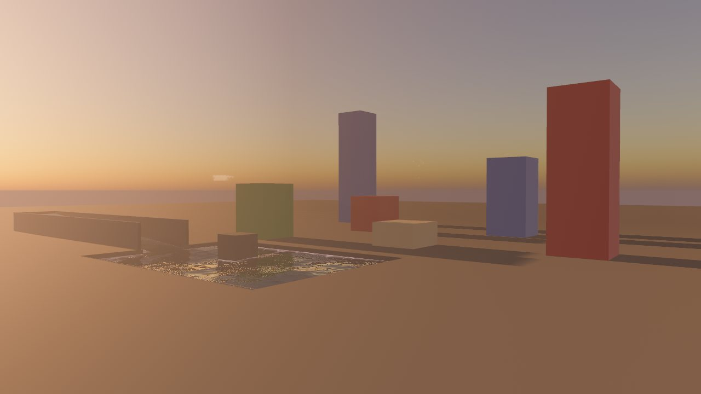
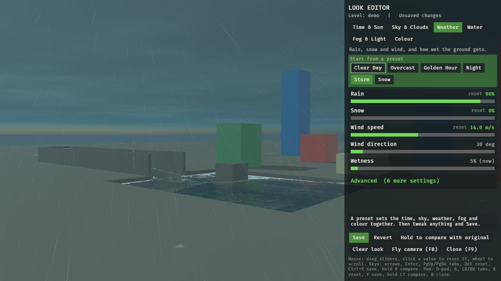
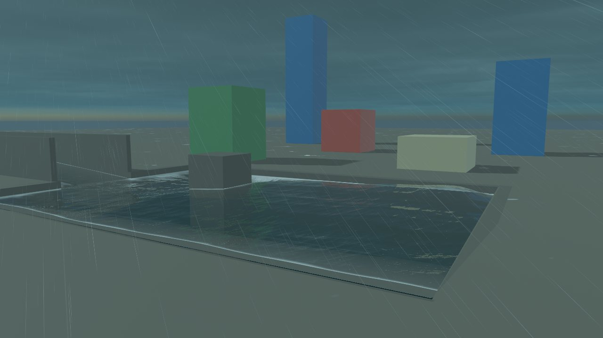
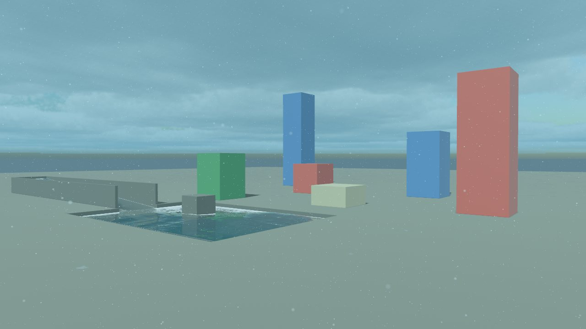
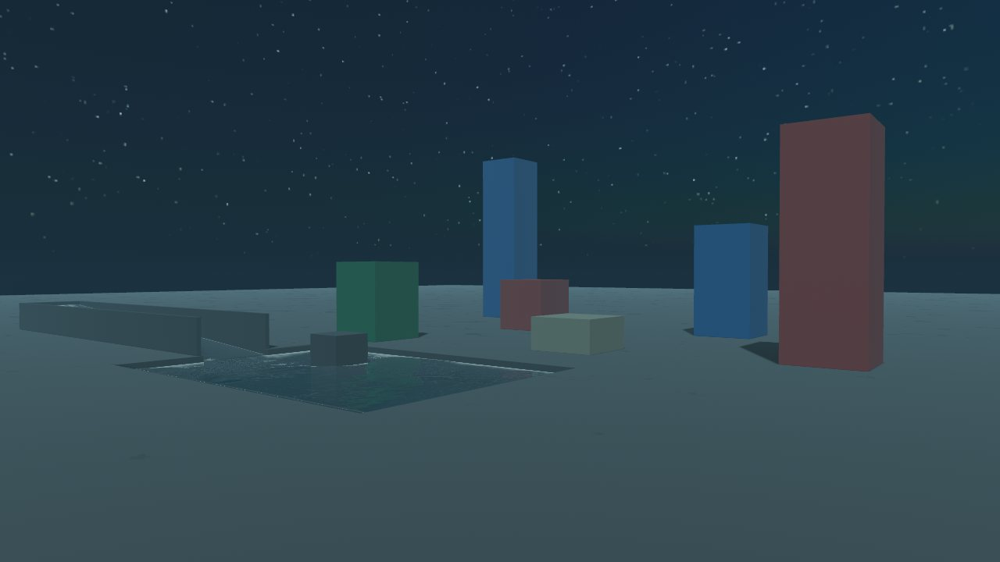
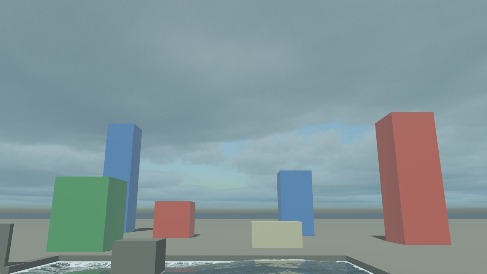
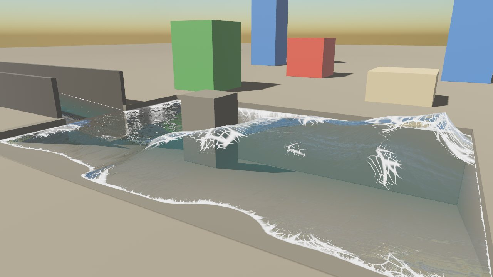
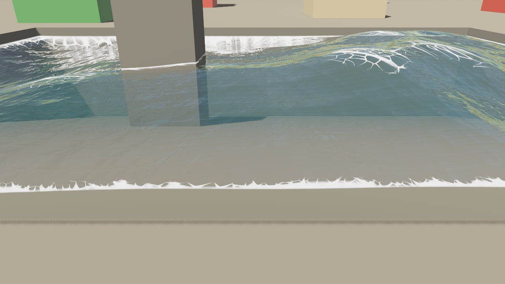
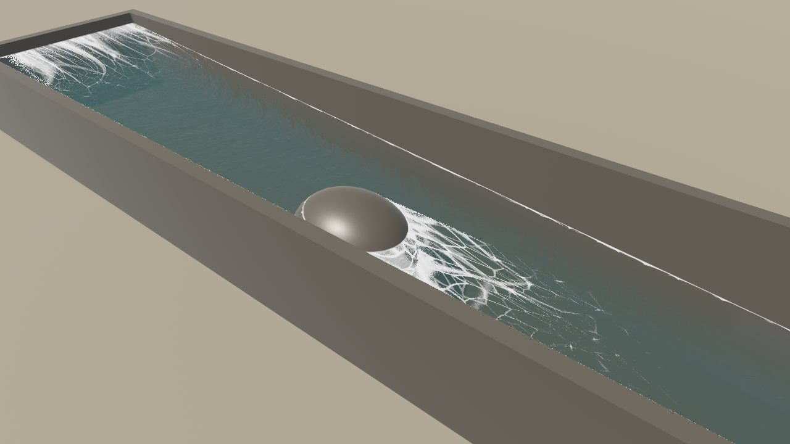
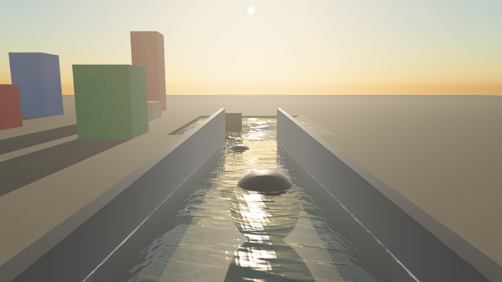

Sky, weather and water for Bevy
Time of day, a physical sky with volumetric clouds, rain and snow that soak the ground, modern water with flowing rivers, fog, sun shafts and a colour grade. Add it in one line, then tune it live in your game from an editor anyone can use.

App::new().add_plugins((DefaultPlugins, AtmosPlugin::new("my_level", "looks")))Each part works on its own and every value is a live slider. Nothing changes until you change it, so a level without a saved look looks exactly as your game made it.
Press F9. Six plain-English tabs, a help line on every slider, click to reset, presets, Save, Revert and hold-to-compare.
Set the hour or let the clock run. The sun follows a real path for your latitude and the moon lights the night.
A physical sky whose colours follow the sun, and 3D clouds raymarched per pixel: cover, greyness, wisps, height and drift.
Rain and snow slant in the wind. Surfaces darken as they soak, collect puddles that ripple, and dry slowly after.
Wind-driven waves, shore and crest foam, reflections, sun glitter, rain rings and underwater fog. Rivers flow downhill into white water.
Distance fog tinted by the sky, beams of sunlight through the haze, and screen-space reflections on wet ground.
Exposure, warmth, tint, contrast and saturation as the final touch.
Looks are small text files, one value a line: easy to read, diff and commit, or ship inside your game.
Press F8 to fly round the level and judge the look from anywhere, with mouse and keys or a pad.

All taken in the demo that comes with the plugin, from the presets and a few slider changes.








You need Bevy 0.19, a recent stable Rust (edition 2024, from rustup.rs) and a GPU that runs Bevy's default renderer on Vulkan, DirectX 12 or Metal. WebGL2 isn't supported.
In your game's Cargo.toml:
[dependencies]
bevy_atmos = { git = "https://github.com/Nilbong/bevy_atmos" }The level's name names its saved look; the folder is where looks go.
use bevy::prelude::*;
use bevy_atmos::{AtmosCamera, AtmosPlugin, AtmosSun};
fn main() {
App::new()
.add_plugins((DefaultPlugins, AtmosPlugin::new("my_level", "looks")))
.add_systems(Startup, setup)
.run();
}
fn setup(mut commands: Commands) {
commands.spawn((Camera3d::default(), bevy::camera::Hdr, AtmosCamera));
commands.spawn((DirectionalLight { shadow_maps_enabled: true, ..default() }, AtmosSun));
}Pick a preset, move some sliders and press Save. The look is written to looks/my_level.txt.
Clone the repo and run the demo scene: a few boxes, a pool and a river under the full sky.
git clone https://github.com/Nilbong/bevy_atmos
cd bevy_atmos
cargo run --release --example demo# my_level's look (bevy_atmos)
time.hour = 17.5
sky.cover = 0.6
weather.rain = 0.4Only what you changed is written. Set the AtmosLevel resource when the level changes and its look loads. Ship looks inside your game with AtmosSettings::builtin.
The sky, clouds, fog, shafts, rain, snow and grade work with just the camera and sun tagged. These make the rest of your level join in.
WetMaterialA StandardMaterial extension. Use Wet::ground() for floors that collect puddles and Wet::surface() for walls and props.
AtmosWaterPut it on each water mesh. With Modern water on, Atmos draws modern water over it; turn it off and your own water shows again.
WaterFlowBeside AtmosWater, the water keeps the mesh's slope and flows: from your texture's UV scroll, a UV axis, a world velocity or a flow map. You can also paint flow in the editor.
weather::ShelterA heights image so rain stops at roofs and drips off their edges. Without one, rain falls everywhere.
SSROn by default for the tagged camera (it adds a depth prepass). Tune it or turn it off on the Fog & Light tab.
knobs::getRead any value anywhere, e.g. knobs::get("weather.rain", 0.0). Skip your mouse look while editor::open() is true.
Honest notes, so nothing surprises you.
AtmosCamera and AtmosSun. No split-screen yet.Add bevy::camera::Hdr to the camera with AtmosCamera. The sky's brightness is in real units.
Your mouse look is still running. Skip it while bevy_atmos::editor::open() or flycam::active() is true.
Turn on Modern water on the Water tab, and make sure the water mesh entity has AtmosWater.
It's <save_dir>/<level>.txt, relative to the folder the game runs from, and the name must match AtmosLevel. The log prints atmos: N knobs for <level> on load.
Lower Cloud quality or turn Volumetric clouds off (Sky & Clouds > Advanced), and lower Sun shaft quality (Fog & Light > Advanced).
bevy_atmos is dual-licensed under MIT or Apache-2.0, the same as Bevy. Use it in any game, commercial or not, without asking.